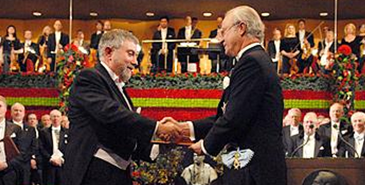

My take on Krugman's Nobel - from today's Crikey! And there's lots of other views around the blogosphere, not all of whose I've read. Joshua had Krugman as a teacher and his post is a goodie - make sure you read Krugman's interstellar trade theory. Because I don't think I can just provide the url - it's specific to my 'Google Reader' I've pasted the list of items that come up when I search my favourite blogs - or the one's entered into my Google reader - with "Krugman + Nobel".
Cometh the hour cometh the Nobel. Paul Krugman didn't get the prize for his journalism. But he should have. Heres a chronological list of the highlights of his career.
1. 'New' or strategic trade theory
2. Economic geography
3. His writing on financial crises
4. Economic journalism for Slate - serious lengthy articles explaining economics to the interested layperson
5. Economic journalism of the NYT op ed kind.
But the list is also in reverse order of significance. Though Krugman got the Nobel for items 1 and 2, I would have given it to him for items 3 to 5. Krugmans work has got better and better.
His participation in new trade theory was interesting enough. But it wasnt the first time, and wont be the last that the discipline was mesmerised by something that turned out to be pretty useless. Strategic trade theory tells us what we already knew (though economists spent a lot of time ignoring it) - namely that economies of scale are important in determining the patterns of trade, that in principle countries can intervene to advantage themselves in trade by that its difficult, risky and the payoffs are typically not large.
Krugman argued that he and his comrades couldn't have known that until they tried. Well fair enough, but economists of great standing - like John Hicks and Milton Friedman had already warned that the problem with modelling imperfect competition was that one was forced into making too many ad hoc assumptions to get models to work for them to be much use. That's exactly what happened.
Things improve with Krugmans economic geography. Though he often apologises for the informality of his models and indeed seems less preoccupied with getting them into the best journals their simplicity means they become useful as heuristics for thinking about policy. Still, his work on financial crises is much more policy useful again. (This reminds me of the debates of the 1920s and 30s. Keynes largely stayed away from the discipline's preoccupation with economies of scale, the modelling of imperfect competition and consumer theory - the indifference curves and so on that constitute such a large part of Economics 101. Of course you could argue that he just didn't range too widely out of his field which was monetary economics but Keynes wasn't exactly shy of expanding his intellectual horizons or dishing out advice outside his areas of specialism. So why the lack of involvement in these things? I think the reason is that Keynes had great intuition. For him there wasn't much point in economics - as be put it "an easy discipline at which few excel" unless one could connect some simple but realistic stylised picture of the world with robust policy conclusions. As his mentor Marshall had counselled, avoid long chains of deduction. And he knew that the areas I've mentioned didn't offer fertile ground.)
And Krugman's work on financial crises, including some fantastic commentaries on and suggestions for addressing Japans malaise were great, really useful economics. And a great preparation for the circumstances in which we now find ourselves.
But for me this is just the preparation for his greatest work as the New York Times' columnist of the century. How Krugman teaches, writes serious and popular books, textbooks, gives seminars, media interviews and then writes two columns a week - well it's beyond me. Last week he whipped up a model on the international transmission of the financial crisis. As Dani Rodrik put it on his blog yesterday His ability to cut to the heart of the matter with just a couple of equations is unparalleled in the profession.
And to top it off, unlike most political journalists whose subject - they seem to think - is whos spin went over best this week, Krugman's focus on an actual subject means that when he sees a lie thats what he calls it. That style meant that he was the one to write the first draft of history when the US Republican Party metastasised into a revolutionary party with no sense of the legitimacy of its political opponents' in which nothing was off limits if it might advance political ends.
And so Krugman began calling it like it was - with passion but with remarkable accuracy. (True to academic traditions, if he makes a mistake he publicly acknowledges it). As the US government plumbed new depths of routine lying, authorised torture and 'extraordinary rendition', exploited its soldiers and dismissed judges whose judgements didn't please it, Krugman told us about it.
Congratulations Paul.
The Americans have been unlucky that one side of their political system has gone close to psychosis - can you imagine a John Howard addressing a rally at which people chanted that his political opponent was a terrorist and others shouted "Kill him"? But Americans have been lucky that Krugman was the first and foremost to name this toxic and revolutionary state of affairs for what it was.
My only disappointment is that his citation for the Nobel was not for his greatest achievement - to be the best economic journalist since, but probably even including Keynes.
The list of items on Krugman and the Nobel from my Google Reader feeds.

...on Paul Krugman's contributions to economics: Honoring Paul Krugman, by Edward L. Glaeser: ...Paul ... Krugmans fame as a public intellectual should not lead anyone to think that they understand his contributions to economic research just because they regularly read his columns. The Nobel Prize citation highlights two distinct but connect...
Economist's View -
11:36 AM (4 hours ago)
...Paul Krugman's "autobiographical essay": Incidents from My Career, by Paul Krugman (1992): My personal life is not interesting. I don't mean that I am an especially deadly dinner companion, or that I have not had my fair share of life's joys and miseries. What I mean is that only my friends and family are interested in the mo...
Economist's View -
10:56 AM (4 hours ago)
...for a Nobel prize in economics: Dead Parrot Society, by Paul Krugman (2002): A few days ago The Washington Post's Dana Milbank wrote an article explaining that for George W. Bush, "facts are malleable." Documenting "dubious, if not wrong" statements on a variety of subjects, from Iraq's military capability to t...
Economist's View -
10:56 AM (4 hours ago)
...to Paul Krugman on getting the Nobel prize. It was overdue (but then it usually is). I cant think of an economist who could match him at extracting deep insight from simple, ingeniously specified modelsagain and again, one thought, why did nobody else see this?or whose forthcoming academic papers would arouse such excitement. He can be an ira...
Clive Crook's blog -
10:43 AM (5 hours ago)
...more inevitable Nobel prize winner than Paul Krugman. And I guess today the Nobel committee agreed and awarded him the prize. Before he turned his career towards the popular, Krugman revolutionised trade theory, the theory of currency markets and economic geography. It was on the latter part that I had most interaction with him as his tutorial a...
CoreEcon -
9:07 AM (6 hours ago)
...Krugman post is pretty hilarious. But given Krugmans place of pride in the wingnut demonology, Im sure that this is only a mere scraping of whats out there on the Internets today. It furthermore occurs to me that someone (i.e. Me) should do a comments thread to collate and conserve the very bestest blogposts and comments on the Vast Nobel Pri...
Crooked Timber -
1:58 PM (1 hour ago)
...s Nobel Prize winner in economics, Paul Krugman. Krugman was awarded the prize "for his analysis of trade patterns and location of economic activity." Sayeth the Prize Committee:This years Laureate is awarded the Prize for his research on international trade and economic geography. By having shown the effects of economies of scale on ...
The G Spot -
6:26 AM (9 hours ago)
...on Paul Krugman, recipient of this year's economics Nobel. Especially interesting (and potentially useful for academics in the humanities also - I haven't often seen such a cogent statement of the way one might discover what sort of thinking one is likely to do):Krugman on his own intellectual style.
Light reading -
2:16 AM (13 hours ago)
...the Nobel prize and one for having been a beacon of light and guidance during the latest crisis. Many would have thought that his increasingly public role--and contempt for everything Republican--in recent years had diminished his chances, but the committee made the right choice. Paul's contributions to international economics are legion. ...
Dani Rodrik's weblog -
10:00 AM (5 hours ago)
...Paul Krugman has won the Nobel Prize for Economics[1]. The citation says he got it for his analysis of trade patterns and location of economic activity ie for new trade theory. Which certainly did pretty much light a bomb under the subject when he published it in the 1980s, but if this is all its for, its frankly surprising that Krugma...
Crooked Timber -
12:51 AM (14 hours ago)
...Paul Krugman has been awarded the 2008 Nobel prize for economics[1]. The rules of the prize, honoured more in the breach than in the observance in economics, say that it is supposed to be given for a specific discovery, and Krugman is cited for his groundbreaking work in the economics of location done from the late 1970s to the early 1990s. Th...
Crooked Timber -
12:51 AM (14 hours ago)
...Paul Krugman has been awarded the 2008 Nobel prize for economics[1]. The rules of the prize, honoured more in the breach than in the observance in economics, say that it is supposed to be given for a specific discovery, and Krugman is cited for his groundbreaking work in the economics of location done from the late 1970s to the early 1990s. The ...
John Quiggin -
12:37 AM (15 hours ago)
...the 2008 Nobel Prize in Economics.Professor Paul Krugman of Princeton University has repeatedly attacked the Bush administration in his twice-weekly New York Times columns and extensively studied the so-called "liquidity trap" into which Japan fell for more than a
Peter Martin -
12:37 PM (3 hours ago)
...s Nobel Prize in economics goes to Paul Krugman.Here is a description of the contributions for which he is justly lauded today.Congratulations, Paul!To learn more about the newest laureate, you can read an analysis of Paul's research contributions and an analysis of his op-ed pieces.Update: Justin Fox of Time Magazine says I predicted this prize...
Greg Mankiw's Blog -
8:23 AM (7 hours ago)
...by Paul Krugman, Commentary, NY Times: Has Gordon Brown, the British prime minister, saved the world financial system? O.K., the question is premature we still dont know the exact shape of the rescues in Europe or ... the United States, let alone whether theyll really work. What we do know, however, is that Mr. Brown and Alistair Darling...
Economist's View -
10:56 AM (4 hours ago)
...Paul Krugman, today's foremost international trade theorist, arguing that trade with low-income countries is no longer too small to have an effect on inequality; Alan Blinder, a former US Federal Reserve vice-chairman, worrying that international outsourcing will cause unprecedented dislocations for the US labour force; Martin Wolf, the Fin...
Dani Rodrik's weblog -
29/07/2008 11:53 PM
...Paul Krugman, "a self-described pussycat": Maverick loads gun for new round of shots, by Ben Naparstek, Business Day: Today, Paul Krugman doesn't seem like a maverick. A CNN poll in April found George Bush to be the least popular American president in modern history... But in the run-up to the Iraq invasion, Krugman was one of th...
Economist's View -
31/05/2008 11:14 AM
...quotes Paul Krugman as saying that although the impact of trade on American inequality is hard to measure, it is nonetheless significant:What all this comes down to is that its no longer safe to assert, as we could a dozen years ago, that the effects of trade on income distribution in wealthy countries are fairly minor. Theres now a good case ...
The G Spot -
28/05/2008 4:04 AM
...Paul Krugman Posted: Tuesday, November 5, 1996, at 4:30 p.m. PT Jacques Derrida Ain't no wrida Then again, ain't no reada Eida. MIT, at the pinnacle of professional prominence, has an ideological flavor ... and also a stronger team orientation than most places. The problem is not conditions at the pinnacle but the inferior results wh...
Economist's View -
10/05/2008 4:09 PM
...and a Nobel laureate, may even have dislodged Paul Krugman from his endowed chair as Most Devastating Bush Critic Alive. That isn't easy, and it requires a complete reading to appreciate it. But here's a taste: You'll still hear some -- and, loudly, the president himself -- argue that the administration's tax cuts were meant to stim...
Economist's View -
10/11/2007 9:45 AM
...with Paul Krugman on the relationship between the right-wing and the media, and other matters: Where Does the Right-Wing End and the Media Begin? By Rory O'Connor, AlterNet: I had the opportunity to sit down this week with ... Paul Krugman... He certainly pulled no punches during our conversation... Rory O' Connor: ...What role if any do the...
Economist's View -
27/10/2007 8:09 PM
...Paul Krugman, and Alex Tabarrok for openers. Is it due to a skill premium, non-linearities in returns to education, a rising oligarchy, a winner take all economy, luck, or some other factor?: Brad DeLong: Optimal Tax Policy: An old New York Times column by Hal Varian: Hal Varian: In the debate over tax policy, the power of luck shouldn&#...</span></div>
<br></div>
<br><div class="entry-attribution"><span class="entry-source-title"><a class="entry-source-title-link" href="http://www.google.com/reader/view/feed/http%3A%2F%2Feconomistsview.typepad.com%2Feconomistsview%2Fatom.xml" target="_blank" rel="noopener">Economist's View</a></span> - <span class="entry-date">22/07/2006 7:30 AM</span></div>
<br></div>
<br></div>
<br></div>
<br><div class="entry read read-state-locked">
<br><div class="search-result">
<br><div class="entry-main"></p>
<p><a class="entry-original" href="http://economistsview.typepad.com/economistsview/2006/06/sweet_spots_and.html" target="_blank" rel="noopener"><img class="entry-title-go-to" src="http://www.google.com/reader/ui/2412528845-go-to.gif" alt="" width="18" height="18" /></a>
<br><div class="entry-secondary">
<br><h2 class="entry-title"><a class="entry-title-link" href="http://economistsview.typepad.com/economistsview/2006/06/sweet_spots_and.html" target="_blank" rel="noopener">Sweet Spots and Doughnut Holes</a></h2>
<br><div class="entry-secondary-snippet"><span class="snippet">...Paul <strong>Krugman</strong> is on vacation, so here's a column from October, 2003. The column explains how the 2001 and 2003 tax cuts contain provisions designed to make it politically difficult to call for a rollback of the tax cuts to their original levels: The Sweet Spot, by Paul<strong>Krugman</strong>, Commentary, NY Times, October 17, 2003: "What we have here is ...</span></div>
<br></div>
<br><div class="entry-attribution"><span class="entry-source-title"><a class="entry-source-title-link" href="http://www.google.com/reader/view/feed/http%3A%2F%2Feconomistsview.typepad.com%2Feconomistsview%2Fatom.xml" target="_blank" rel="noopener">Economist's View</a></span> - <span class="entry-date">26/06/2006 4:40 PM</span></div>
<br></div>
<br></div>
<br></div>
<br><div class="entry read read-state-locked">
<br><div class="search-result">
<br><div class="entry-main"></p>
<p><a class="entry-original" href="http://economistsview.typepad.com/economistsview/2006/06/robert_mundell_.html" target="_blank" rel="noopener"><img class="entry-title-go-to" src="http://www.google.com/reader/ui/2412528845-go-to.gif" alt="" width="18" height="18" /></a>
<br><div class="entry-secondary">
<br><h2 class="entry-title"><a class="entry-title-link" href="http://economistsview.typepad.com/economistsview/2006/06/robert_mundell_.html" target="_blank" rel="noopener">Robert Mundell: Don't Pressure China Into a Large Revaluation</a></h2>
<br><div class="entry-secondary-snippet"><span class="snippet">...Canadian <strong>Nobel</strong> economist Mundell says, by Steve Mertl, CBC: Fear of China's growing economic power is pushing its competitors in potentially dangerous directions, says economist Robert Mundell, the Canadian-born <strong>Nobel</strong> Prize winner... U.S. politicians and some business leaders accuse China of keeping its currency ... at an artificially lo...</span></div>
<br></div>
<br><div class="entry-attribution"><span class="entry-source-title"><a class="entry-source-title-link" href="http://www.google.com/reader/view/feed/http%3A%2F%2Feconomistsview.typepad.com%2Feconomistsview%2Fatom.xml" target="_blank" rel="noopener">Economist's View</a></span> - <span class="entry-date">11/06/2006 4:31 AM</span></div>
<br></div>
<br></div>
<br></div>
<br><div class="entry read read-state-locked">
<br><div class="search-result">
<br><div class="entry-main"></p>
<p><a class="entry-original" href="http://economistsview.typepad.com/economistsview/2006/05/krugman_the_cru.html" target="_blank" rel="noopener"><img class="entry-title-go-to" src="http://www.google.com/reader/ui/2412528845-go-to.gif" alt="" width="18" height="18" /></a>
<br><div class="entry-secondary">
<br><h2 class="entry-title"><a class="entry-title-link" href="http://economistsview.typepad.com/economistsview/2006/05/krugman_the_cru.html" target="_blank" rel="noopener"><strong>Krugman</strong> the Crusader, Persuader, and Trade Theory Maker</a></h2>
<br><div class="entry-secondary-snippet"><span class="snippet">...on Paul <strong>Krugman</strong>. This is good: People in Economics , Economist as Crusader, Arvind Subramanian interviews economist Paul<strong>Krugman</strong>, IMF, Finance and Development: Economics made Paul <strong>Krugman</strong> famous. Punditry has made him a celebrity, famous for being famous. But <strong>Krugman</strong> aspires to be long remembered, and, in this respect, John Maynard Keynes ...</span></div>
<br></div>
<br><div class="entry-attribution"><span class="entry-source-title"><a class="entry-source-title-link" href="http://www.google.com/reader/view/feed/http%3A%2F%2Feconomistsview.typepad.com%2Feconomistsview%2Fatom.xml" target="_blank" rel="noopener">Economist's View</a></span> - <span class="entry-date">31/05/2006 7:20 PM</span></div>
<br></div>
<br></div>
<br></div>
<br><div class="entry read read-state-locked">
<br><div class="search-result">
<br><div class="entry-main"></p>
<p><a class="entry-original" href="http://economistsview.typepad.com/economistsview/2006/05/krugman_review_.html" target="_blank" rel="noopener"><img class="entry-title-go-to" src="http://www.google.com/reader/ui/2412528845-go-to.gif" alt="" width="18" height="18" /></a>
<br><div class="entry-secondary">
<br><h2 class="entry-title"><a class="entry-title-link" href="http://economistsview.typepad.com/economistsview/2006/05/krugman_review_.html" target="_blank" rel="noopener"><strong>Krugman</strong>: Review of 'Knowledge and the Wealth of Nations,' by David Warsh</a></h2>
<br><div class="entry-secondary-snippet"><span class="snippet">...Paul <strong>Krugman</strong> with an interesting review of David Warsh's book Knowledge and the Wealth of Nations about the role of increasing returns to scale in theories of economic growth: The Pin Factory Mystery, Review of 'Knowledge and the Wealth of Nations,' by David Warsh, Review by Paul <strong>Krugman</strong>, Sunday Book Review, NY Times: Economic ide...</span></div>
<br></div>
<br><div class="entry-attribution"><span class="entry-source-title"><a class="entry-source-title-link" href="http://www.google.com/reader/view/feed/http%3A%2F%2Feconomistsview.typepad.com%2Feconomistsview%2Fatom.xml" target="_blank" rel="noopener">Economist's View</a></span> - <span class="entry-date">07/05/2006 4:01 PM</span></div>
<br></div>
<br></div>
<br></div>
<br><div class="entry read read-state-locked">
<br><div class="search-result">
<br><div class="entry-main"></p>
<p><a class="entry-original" href="http://economistsview.typepad.com/economistsview/2005/12/coordinating_su.html" target="_blank" rel="noopener"><img class="entry-title-go-to" src="http://www.google.com/reader/ui/2412528845-go-to.gif" alt="" width="18" height="18" /></a>
<br><div class="entry-secondary">
<br><h2 class="entry-title"><a class="entry-title-link" href="http://economistsview.typepad.com/economistsview/2005/12/coordinating_su.html" target="_blank" rel="noopener">Coordinating Success</a></h2>
<br><div class="entry-secondary-snippet"><span class="snippet">...up on <strong>Krugman</strong>'s column which takes a cue from an LA Times article by Peter Gosselin, who in turn cites recent <strong>Nobel</strong> prize winner Thomas Schelling: On Their Own in Battered New Orleans, by Peter Gosselin, Los Angeles Times: ..."There is no market solution to New Orleans," said Thomas C. Schelling ... who won this year's <strong>Nobel</strong> M...</span></div>
<br></div>
<br><div class="entry-attribution"><span class="entry-source-title"><a class="entry-source-title-link" href="http://www.google.com/reader/view/feed/http%3A%2F%2Feconomistsview.typepad.com%2Feconomistsview%2Fatom.xml" target="_blank" rel="noopener">Economist's View</a></span> - <span class="entry-date">10/12/2005 2:54 PM</span></div>
<br></div>
<br></div>
<br></div></blockquote></p>

Great work, Nicholas. Under Point 4, you could perhaps have been a bit more specific about the nature of PK's popular interventions. I refer in particular to his critique of 'policy entrepreneurs'. That fact that just as many of his targets were people like Lester Thurow from the putative left as from the right, laid the foundation for his reputation as an even-handed critic who rests his case on basic economic logic and facts. Having made that investment, he has reaped huge dividends as a critic of the Bush Administrative without having tp resort to phoney even-handedness (his bugbear and yours) in order to retain credibilty.
In terms of their contribution to popular writing, I'm not sure that a comparison with Keynes is feasible. Krugman has the benefit of vastly more time and resources for that stuff, as well as a much more codified body of theory to draw upon. On the other hand, Keynes was a dazzling stylist, which Krugman, though a clear expositor and occasionally an entertaining polemicist, is not
Yes, I agree with both your major points James. Indeed most of them occurred to me and got to the stage of vague intentions as I wrote the piece, but given the limitations on space and time, didn't find their way into the piece. Had I had the chance to run it past you - as I often do with the AFR columns, I might have done a better job.
A well deserved honour. The wingnuts didn't seem very pleased, though.
Re-reading this, I recall writing it that I was thinking that the third point should have encompassed more than financial crisis, because I remember reading a great article of Krugman's on whether the Euro was a good idea - in which he pointed out what is now obvious - that Europe isn't a natural currency union. Point three should have been more general - and referenced his writing in international macro.
On the downside - my main bugbear with Krugman is his implicit valorising of formal theory in economics. Formal theory is good where it adds more value than it subtracts. That’s not something he seems to appreciate. For instance here he is on his own contribution to Strategic Trade Theory.
This is a ridiculous thing to say. In around 1961 Linder had lain out an informal model explaining what was before our eyes, that Mercedes made utility cars in Germany and exported the same things as luxuries. Vernon (I think his name was) explained 'product cycle' trade which had a similar mechanism. These elaborations were not confused at all. They explained the messy reality simply and compellingly. Krugman's paper built a model that made lots of unrealistic assumptions and ended up deriving the result of intra-industry trade which was paradoxical only to the minds of economists who had been trained first not to see it until someone came along and build a formal model of it. What did the formal model add. Perhaps a little, because in his cleverness Krugman had come up with a nice simple formula for the formal model. But for a messy reality it didn't offer a lot - one couldn't offer a lot. For messy realities you need to know a lot of detail to say much, however fancy your model is.
Another silly Krugmanism
Here's a prediction - solving the problem has (obvious) economic value - just watch!